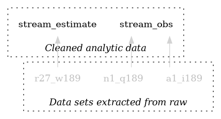

How long will it take Doug to dig his nether farm hole?
blockdata contains data for analyses of streams documenting the excavation of a Minecraft hole for a Nether farm perimeter. Jamie Gumbrell collected and recorded the stream observations, and the package keeps those observations separate from estimates recorded in the source spreadsheet.
View the source repository on GitHub · Open the source spreadsheet
The datasets
-
stream_obshas one row per stream date. It combines the recorded duration, blocks mined, method, and pick-counter readings with calculated durations, rates, and cumulative totals. -
stream_estimatepreserves estimates from the spreadsheet, matched to stream dates. The package does not recalculate these estimates; interpretations of the blank-header source column and some estimate fields are documented as inferences.
How the data is organized
The package extracts selected spreadsheet ranges into internal source data, then builds the two public datasets shown below. There is no separate semantic-data stage. The observation and estimate records cover different date ranges because the estimates begin later in the source sheet.

The year in the source dates has not been confirmed. The package currently uses 2016 as a placeholder, set in data-raw/extract.R. The meanings of the pick-start and pick-end readings also remain to be confirmed.
Guides
-
Use
blockdatain an analysis — install the package and work with its public datasets. - Develop the package — set up the repository, rebuild datasets, and inspect internal source ranges.